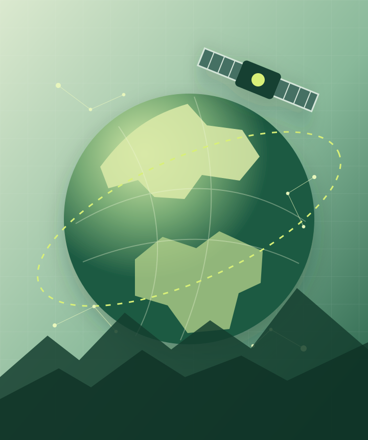

01
深度学习
研究高效神经网络、自监督学习与多模态表征，让模型从复杂数据中学习更具泛化能力的知识。
Research · Explore · Create
人工智能与遥感科学研究者
专注于深度学习、计算机视觉与遥感图像分析，探索智能算法如何更好地理解地球观测数据。

01 / RESEARCH
围绕视觉智能与地球观测，研究可靠、高效且具有实际价值的智能方法。
研究高效神经网络、自监督学习与多模态表征，让模型从复杂数据中学习更具泛化能力的知识。
聚焦图像理解、目标检测与语义分割，构建能够感知并解释真实世界视觉信息的智能系统。
融合卫星与航空影像开展地物识别、变化检测和环境监测，以智能技术服务可持续发展。
02 / PROJECTS
从算法研究到实际应用，尝试让每个想法都成为可验证、可落地的成果。
03 / CONTACT
欢迎就学术研究、项目合作或任何有趣的想法与我交流。